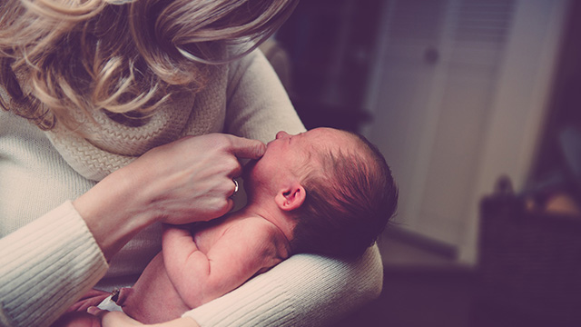

長年人間をやってきて、様々な親子関係を見てくると、つくづく母親というものは子どもにとっていかに大きな存在か思い知らされます。
特に幼いころは、子どもにとって母親は絶対的な存在です。
母は愛の対象であると共に、保護し守ってくれる庇護者である。
いや、それだけでない。子どもにとって母親は世界そのものといってよいかも知れません。
それはやはり、母親の子への愛というものがとてつもないほど深いものだからでしょう。
子どもが産まれ、その子が小学生に上がるくらいまでの子育てにかけるエネルギーは莫大なものだと思います。人間の赤ん坊～幼児は、他の動物より弱い存在です。
子の命を守るために、母親は文字通り自分の命を削って子育てに献身しているといってよいでしょう。
まさに無償の愛です。母の愛は海より深い！
これはどんなに時代が変わっても不変の真理です。
私たちは皆、このような母親の深い愛によって包まれ慈しまれたからこそ、人として生き延びてこられたと心のどこかで知っています。
どんな極悪非道な人間でも、胸の奥深くには母親への純粋無垢な愛着をたたみこんでいるものです。
母への愛着といえば、私はいつも次のようなエピソードを思い出します。
それは、私の父がよく語っていた戦場でのエピソード。
ちなみに父は太平洋戦争中、常に最前線で戦い自身も生死の境をさ迷いながらなんとか生還した兵士でした。
その彼によると、戦場で死んでいく兵士たちの最後の言葉は圧倒的に「お母さん」だった。
「お父さんと言った奴は一人もいなかった」
と父は苦笑交じりに言ったものです。
私はこの話を聞いたとき、子ども心にも衝撃を受けたことを覚えています。
死んでいく兵士たちは皆「お母さん」と叫ぶのか…。
人は人生の最後に至ってもなお、脳裏に浮かぶのは母の面影なら、母とは何と大きな存在なのか。
多分、そんな思いだったのでしょう。
母親の影響は一生続く
母親は子どもにとって絶対的存在というだけでなく、その影響は一生続くのだという事実。
このことを母親自身はどれだけ自覚しているでしょうか。
あなたがもし母親なら、あなたの影響力は子どもにとっても圧倒的であるという事実を、まず知って欲しいのです。
といって、私は世のお母さんたちを脅しているのではありません。
子どもに対する言動に気をつけろとか、子どもを過度にコントロールするなとかお説教を垂れようとしているのではありません。
（もちろん過度のコントロール欲求は控えた方が良いのですが）
ただ、最近は昔と比べ子どもが自立しにくくなっている背景があるということ。
少子化や核家族化、また社会が複雑になることで学生時代が長くなり、社会的に一人前になるのが遅くなるなど、子どもたちが「世間の荒波」にもまれる機会が減っている。
要するに家庭で抱え込む期間が長くなっているということ。大学生～社会人になっても親と同居し、その間母親はせっせと子どもの世話を焼くという光景が珍しくなくなっている。
こういう事実があるということです。
「ライオンは我が子を千じんの谷へ落とす」ということばの通り、動物は一定の時が来ると冷酷なまでに子育てを拒否し、わが子を野に放ちます。
人間も長い間、一定の年齢に達すると我が子を奉公に出すなど親元から切り離しました。
動物も、昔の人間も早く自立しなければ生き延びられないことを知っていたからでしょう。
自立できないと死ぬのが自然の掟です。
でも今はそんなこともなく、自立が遅れても文明の進歩によって問題はない。少なくとも死に直結することはない。
そうなると皮肉なことに、親離れ子離れが難しくなった。特に母親は、その深い愛によっていつまでも子どもを子どものままに慈しみ育てようとする。
ところが一方でこのように言うお母さんもいます。
「私は子どもにベッタリの母親ではありません」
「私は子どもを甘やかしたりせず、本人の自主性を伸ばしているつもりです」
要するに、私は他の母親と違って「子どもと適切な距離をとる理性的な母親です」と主張しているわけです。
しかし、こういうお母さんは冒頭に話したように、母親が子どもにとって理屈を超えた絶対的な存在であるという事実に気づいていないのだと思います。
あくまで頭で理性的にふるまっているだけで、かえって子どもを手放せていなかったりします。
子どもは、母親の一挙手一投足、表情やしぐさの変化一つにも敏感に感応し、まさに母親と一体化して育ってきたのです。
たとえ母親に対して反抗的な子であっても、母への愛着の念は他の子と変わらないのです。
だから、繰り返しになりますが、お母さん方は今一度「自分が子どもにとって絶対的存在」であることを自覚して欲しいのです。
自覚することで、子どもとの新たな関わり方が見えてくるかも知れません。
今日のタイトルは「母の愛は海よりも深い」ですが、子どもの母への愛も海より深いのです。
戦場の兵士たちのエピソードからもそれは分かります。